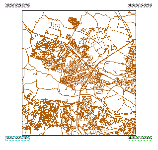

Adding Coordinates to a Map Layout¶
- date:
2007-05-17 16:44
- author:
admin
- category:
arcobjects, esri
- slug:
adding-coordinates-to-a-map-layout
- status:
published
A recent request by an ArcMap was user was how to add the current coordinates of the dataframe to the map layout in ArcMap. I messed around with grids and labelling for a while before resorting to a VBA script.

The code below should copied and pasted into the VBA Editor in ArcMap, and run when the current view is a page layout. The number of decimal places and distances of the text labels from the grid can be changed easily by modifying the relevant variable.
1 Public Sub AddCornerText()
2
3 Dim pMxDoc As IMxDocument
4 Dim pActiveView As IActiveView
5 Dim pLayoutExtent As IEnvelope
6 Dim strText As String
7 Dim pMapFrame As IFrameElement
8 Dim pGraphic As IElement
9 Dim dblOffset As Double
10 Dim lngRound As Long
11
12 ‘this is the offset used so the text does not overlap the map
13 ‘modify according to needs
14 dblOffset = 0.2
15
16 ‘this is the number of decimal places used for each coordinate value
17 lngRound = 0
18
19 Set pMxDoc = ThisDocument
20 Set pActiveView = pMxDoc.FocusMap
21
22 ‘find the map data frame in the layout
23
24 Set pMapFrame = pMxDoc.ActiveView.GraphicsContainer.FindFrame(pMxDoc.ActiveView.FocusMap)
25 Set pGraphic = pMapFrame
26 Set pLayoutExtent = pGraphic.Geometry.Envelope
27
28 ‘create the bottom left point and text
29 strText = Round(pActiveView.Extent.XMin, lngRound) & _
30 “:” & Round(pActiveView.Extent.YMin, lngRound)
31 AddPoint pLayoutExtent.XMin - dblOffset, pLayoutExtent.YMin - dblOffset, strText
32
33 ‘create the top left point and text
34 strText = Round(pActiveView.Extent.XMin, lngRound) & _
35 “:” & Round(pActiveView.Extent.YMax, lngRound)
36 AddPoint pLayoutExtent.XMin - dblOffset, pLayoutExtent.YMax + dblOffset, strText
37
38 ‘create the bottom right point and text
39 strText = Round(pActiveView.Extent.XMax, lngRound) & _
40 “:” & Round(pActiveView.Extent.YMin, lngRound)
41 AddPoint pLayoutExtent.XMax + dblOffset, pLayoutExtent.YMin - dblOffset, strText
42
43 ‘create the top right point and text
44 strText = Round(pActiveView.Extent.XMax, lngRound) & _
45 “:” & Round(pActiveView.Extent.YMax, lngRound)
46 AddPoint pLayoutExtent.XMax + dblOffset, pLayoutExtent.YMax + dblOffset, strText
47
48
49 pMxDoc.ActiveView.Refresh
50
51 End Sub
52
53 Private Sub AddPoint(dblX As Double, dblY As Double, strText As String)
54
55 Dim pMxDoc As IMxDocument
56 Dim pPoint As IPoint
57 Dim pTextElement As ITextElement
58 Dim pPageLayout As IPageLayout
59 Dim pElement As IElement
60 Dim pGContainer As IGraphicsContainer
61
62 Set pMxDoc = ThisDocument
63
64 ‘create the location for the text
65
66 Set pPoint = New Point
67 pPoint.X = dblX
68 pPoint.Y = dblY
69
70 ‘create the text element
71
72 Set pTextElement = New TextElement
73 pTextElement.Text = strText
74
75 ‘add the element to the layout
76
77 Set pPageLayout = pMxDoc.PageLayout
78 Set pElement = pTextElement
79 pElement.Geometry = pPoint
80 Set pGContainer = pPageLayout
81 pGContainer.AddElement pElement, 0
82
83 End Sub
- orphan:
Comments¶
Add Comment